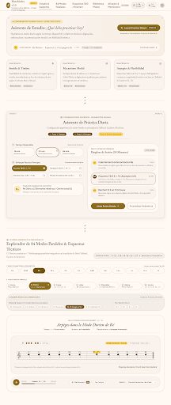

Opción 1 (Recomendada) · Urtext Parchment

Opción 1: Conservatory Guided Coach
Estética Urtext en pergamino cálido (#FDFBF7) y oro antiguo (#D4AF37). Mantiene la identidad clásica de Henle/Leduc pero simplifica el inicio.
- ✅ Dashboard: Tarjeta Hero «¿Qué practicar hoy?» + botón de 1 toque para continuar la última sesión y 3 tarjetas de foco.
- ✅ Wizard: Modal limpio de 3 pasos con generador de rutina de 3 bloques (Calentamiento + Modos + Arpegios).
- ✅ Pantalla de Modos: Selector de 12 tónicas + 7 modos + barra doble de chips para Taffanel (1, 2, 4, 5, 10, 11) y Reichert (1, 2, 4, 5).